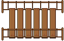

¡Salva a Woody y a sus amigos!
Tiempo: 0 minutos
Linterna en: Costa 1
Tiempo Máximo: 60 minutos
Inicio

Destino
Cruzar Puente
Reiniciar Juego 🔄
Obtener Solución (Prolog)
Registro de Movimientos:
Solución de Prolog: